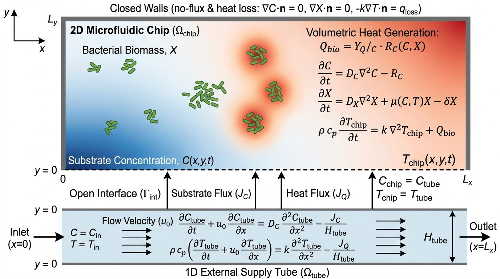

A 2D microfluidic growth chip coupled to an external 1D substrate supply tube: substrate mass transport, Monod bacterial growth kinetics, microbial heat generation, and full temperature evolution — all interacting through a shared open interface.

Rectangular growth chamber over \((x,y)\in[0,L_x]\times[0,L_y]\). Fluid is stagnant or slow, so substrate transport is diffusion-dominated, and bacterial biomass expands locally (green colonies in the figure). Metabolic activity of dense colonies creates localized heat sources (red halos).
Narrow, high-aspect-ratio channel of height \(H_{\text{tube}}\) lying along the open boundary \(y=0\), spanning \(x\in[0,L_x]\). A controlled uniform velocity \(u_0\) advects substrate and heat from the inlet \((x=0,\; C=C_{\text{in}},\; T=T_{\text{in}})\) to the outlet \((x=L_x)\).
The dashed line in the figure: the only open boundary of the chip. It permits continuous lateral exchange of substrate mass and thermal energy with the tube, enforced through simultaneous Dirichlet (value) continuity and Neumann (flux) balance — see §3.
where \(J_C(x,t) = -D_C\,\left.\dfrac{\partial C_{\text{chip}}}{\partial y}\right|_{y=0}\) is the diffusive substrate flux leaving the tube and entering the chip (the first set of upward arrows in the figure).
Biomass grows on substrate via Monod kinetics, scaled by a thermal function (Cardinal Temperature Model / Ratkowsky), spreads by random motility, and decays:
This equation lives only in the chip — the tube is sterile. Note the hidden feedback: \(T\) enters \(\mu\), so heat generated by growth feeds back on growth itself (§4).
Respiration and metabolic carbon conversion are exothermic. The volumetric heat source is proportional to substrate consumption:
\(Y_{Q/C}\): metabolic heat yield per unit mass of substrate consumed (J/g).
Heat spreads by conduction through the fluid/biomass matrix and is generated wherever colonies are active (red halos in the figure).
where \(J_Q(x,t) = -k_{\text{chip}}\left.\dfrac{\partial T_{\text{chip}}}{\partial y}\right|_{y=0}\) is the conductive heat flux exchanged across the interface (second set of arrows).
| Location | Condition |
|---|---|
| Tube inlet \(x=0\) | Dirichlet: \(C_{\text{tube}}(0,t)=C_{\text{in}}\), \(T_{\text{tube}}(0,t)=T_{\text{in}}\) |
| Tube outlet \(x=L_x\) | Zero-gradient outflow: \(\partial C_{\text{tube}}/\partial x = 0\), \(\partial T_{\text{tube}}/\partial x = 0\) |
| Open interface \(\Gamma_{\text{int}}\) at \(y=0\) |
Dirichlet continuity (matching values):
\(C_{\text{chip}}(x,0,t)=C_{\text{tube}}(x,t)\),
\(T_{\text{chip}}(x,0,t)=T_{\text{tube}}(x,t)\). Neumann flux balance (conservation): the fluxes \(J_C\), \(J_Q\) leaving the 1D tube enter the 2D chip boundary unchanged. |
| Closed chip walls \(x=0,\ x=L_x,\ y=L_y\) |
Substrate & biomass — no-flux: \(\mathbf{n}\cdot\nabla C = 0\), \(\mathbf{n}\cdot\nabla X = 0\). Temperature — adiabatic \((\mathbf{n}\cdot\nabla T = 0)\) or convective loss to ambient: \(-k_{\text{chip}}(\mathbf{n}\cdot\nabla T_{\text{chip}}) = h_{\text{amb}}(T_{\text{chip}} - T_{\text{ambient}})\) (top bar in the figure). |
The central nonlinear loop of the system — growth makes heat, heat reshapes growth:
In the figure this is visible at once: colonies sit inside red thermal halos, and the blue (substrate-rich) region is depleted where biomass is dense — supply, consumption, and heating are all spatially coupled through \(\Gamma_{\text{int}}\).
Thermal diffusivity \(\alpha = k/(\rho c_p) \sim 10^{-7}\ \text{m}^2/\text{s}\) is typically 100–1000× larger than substrate diffusivity \(D_C \sim 10^{-9}\ \text{m}^2/\text{s}\):